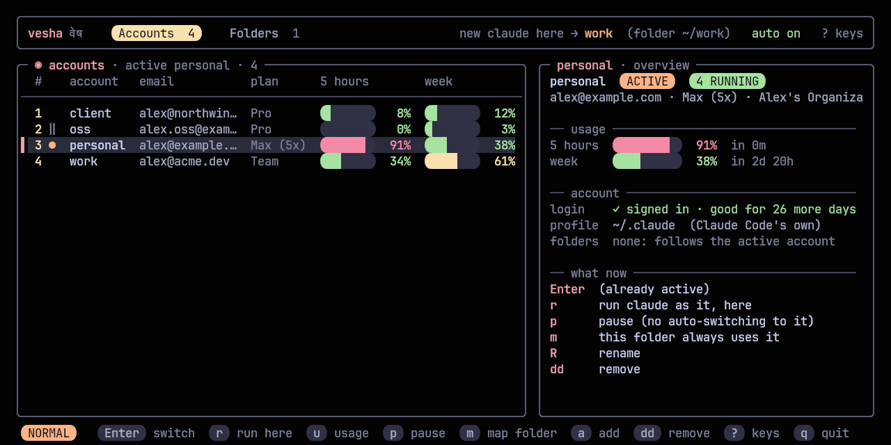
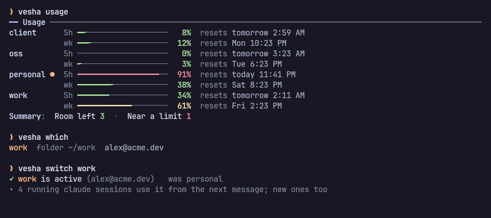
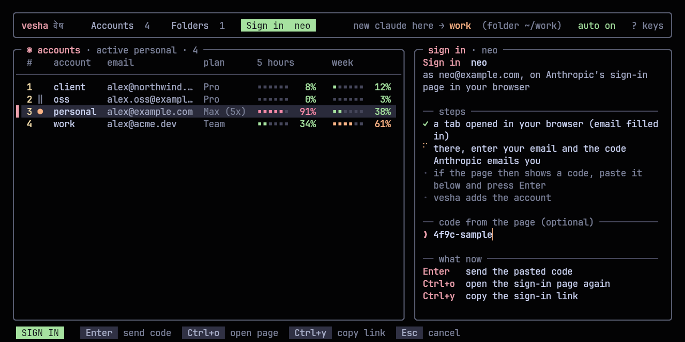
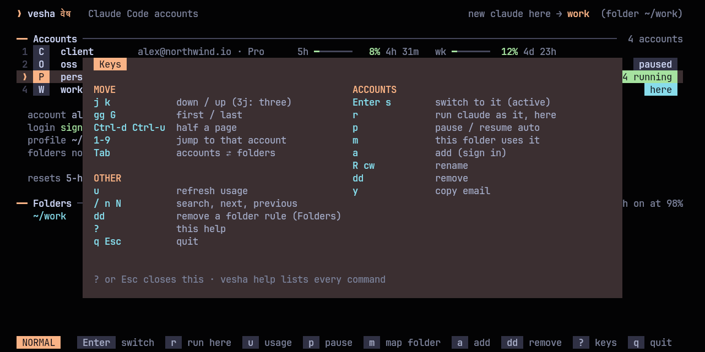

Vesha (वेष) is Sanskrit for "guise, attire": the same Claude, wearing whichever account you choose.
You have more than one Claude subscription: a personal one, a work one, maybe a client's. Claude Code signs in to one at a time, and when its 5-hour limit runs out mid-task you sign out, sign in to the other, and lose your flow. vesha keeps every account signed in at once, each in its own Claude Code profile, and decides which one a new claude starts with. Switch with one key in the switcher or vesha switch; when the active account reaches its limit, vesha switches to the one with the most room left and tells you.

#Features
- Every account signed in at once: switching never signs anything out.
- Switch from anywhere, running sessions included:
vesha switch work(or one key in the switcher) moves work's login into~/.claude, so everyclaudeuses it: sessions already running from their next message, new ones in every folder and terminal. No restart, no re-login. - Automatic switching at the limit: a small background watcher warns you near the limit (with a "Switch to …" button on the notification) and switches by itself when the active account runs out, to the account with the most room left.
- Limits at a glance: 5-hour and weekly usage for every account, with the time each resets, in the switcher,
vesha usage, and your status bar; the bars go green, then yellow from half, then red near the limit. - Vim keys throughout:
j/k,gg/G, counts,/search,dd,cw,?for every key. - One setup, every account: your CLAUDE.md, settings, skills, plugins, agents and commands are shared by every account, and so is your history, so
claude --resumefinds a conversation whichever account started it. - Optional folder rules:
vesha map client ~/code/northwindand that folder (and everything under it) always uses that account. - This terminal only:
vesha use ossswitches just the current shell;vesha run work -- claude -p "..."runs one command as another account. - Imports claude-swap:
vesha import cswapbrings its accounts across. - Safe with your logins: only one copy of each login ever exists (Claude Code rotates them; copies would log each other out), files are private to you, and no token is ever printed.
- No dependencies beyond Python 3.11's standard library.
#Install
With kosha:
kosha install veshaOr with the installer, which clones vesha into ~/.local/share/vesha and links ~/.local/bin/vesha (no root):
curl -fsSL https://raw.githubusercontent.com/Theyashsawarkar/vesha/main/install.sh | bashOr by hand:
git clone https://github.com/Theyashsawarkar/vesha ~/.local/share/vesha
ln -s ~/.local/share/vesha/bin/vesha ~/.local/bin/veshaRequirements: Linux, Python 3.11+, Claude Code signed in with a Claude subscription (Pro, Max, Team or Enterprise). Optional: notify-send for notifications, wl-copy to copy an email from the switcher, systemd for the background watcher.
#Getting started
vesha add personal --current # the account Claude Code is already signed in to
vesha add work # signs in another account (opens Claude Code's sign-in)
vesha install-shim # plain `claude` now follows the active account
vesha service install # the watcher: warns near limits, switches at them
eval "$(vesha init zsh)" # in ~/.zshrc: `vesha use` and tab completion (or bash)
vesha doctor # checks all of itThen vesha opens the switcher, and vesha switch work or vesha switch (the next account) switches from the command line.

#The switcher
vesha on its own opens it, laid out like sangam: tabs for accounts and folder rules on top, with the account a new claude would use here; the accounts on the left with both limits; the selected account's overview on the right (usage with reset times, login, profile, folders, and what you can do with it). Marks in the list: ● active, ‖ paused, ! login changed.
| Key | Does |
|---|---|
j / k | Move down / up (counts work: 3j) |
gg / G | First / last account |
Ctrl+d / Ctrl+u | Half a page down / up |
1-9 | Jump to that account |
h / l | The accounts / folder rules tab |
Tab | Between accounts and folder rules |
Enter / s | Switch to the account |
r | Run claude as the account, in this folder, just this once |
u | Refresh usage now |
p | Pause / resume (out of automatic switching) |
m | This folder always uses the account |
a | Sign in a new account, right here (see below) |
R / cw | Rename the account |
dd | Remove the account, or the folder rule (asks first) |
y | Copy the account's email |
/, n / N | Search; next / previous match |
? | Every key |
q / Esc | Quit |
#Signing in a new account
Press a, give the account a name and (optionally) its email. A tab opens in your browser on Anthropic's sign-in page with the email filled in; enter the code Anthropic emails you there. If the page then shows a code, paste it into vesha and press Enter. The account is added and selected; Enter makes it active. vesha runs Claude Code's own sign-in for the new profile, so it never handles a password.
| Key | Does |
|---|---|
Enter | Send the code the sign-in page shows |
Ctrl+o | Open the sign-in page again |
Ctrl+y | Copy the sign-in link (to open it in another browser) |
Esc | Cancel (the half-made profile is removed) |
From a shell: vesha add work2 you@company.com.


#Commands
Every command has --help with examples; vesha help lists them all.
| Command | Does |
|---|---|
vesha | The switcher (without a terminal: the account list) |
vesha switch [name] | Make an account the active one; no name: the next one (sw, s) |
vesha list | Every account: plan, usage, which is active (ls, status) |
vesha usage | Both limits of every account, with reset times (u) |
vesha which | The account a new claude would use here, and why (w) |
vesha run <name> [-- cmd …] | Run claude (or any command) as an account, once (r) |
vesha use <name> | This terminal only (needs the shell hook) |
vesha auto on|off | Automatic switching at the limit |
vesha pause <name> / resume | Keep an account out of automatic switching |
vesha add <name> [email] [--current] | Sign in a new account (browser, email filled in), or adopt the current one (login signs in again) |
vesha repair | Fix profiles whose login another tool replaced (fix) |
vesha remove <name> | Forget an account and delete its profile (rm) |
vesha rename <old> <new> | Rename an account (mv) |
vesha import cswap | Bring your claude-swap accounts across |
vesha map <name> [folder] / unmap | Optional folder rules |
vesha install-shim / uninstall-shim | The claude wrapper |
vesha service install|remove|status | The background watcher (systemd user unit) |
vesha init zsh|bash | The shell hook for vesha use and completion |
vesha doctor | Check every account, the wrapper and the watcher (check) |
vesha waybar | JSON for a waybar module |
Options: -y don't ask, --json (list, usage, which), --no-color (also NO_COLOR=1), -h, -V.
#Automatic switching
vesha service install starts vesha.service, a systemd user unit that checks the active account's usage every two minutes (every minute once it's close):
- At 85% of either limit it notifies you once per window, with a Switch to … button naming the account with the most room.
- At 98% it switches the active account to that account and tells you which one, and when the old one resets. Every
claudeuses it from its next message, the session that hit the limit included. - If every account is at its limit, it tells you when the first one resets.
"Most room" means the lowest of each account's worse window (a 5-hour limit at 20% doesn't help if the week is at 95%). Paused accounts, and accounts whose usage couldn't be checked, are never picked. vesha auto off keeps the warnings and stops the switching; the log is ~/.local/state/vesha/watch.log.
#Which account a new claude uses
In this order, first match wins:
VESHA_ACCOUNTin the environment:vesha useandvesha runset it for one terminal or one command.- A folder rule (
vesha map): the closest rule above the current folder. - The active account: the one
vesha switch(and the watcher) set.
vesha which prints the answer and the reason for the current folder. Folder rules are optional; without any, every folder follows the active account.
#Configuration
~/.config/vesha/config.toml (every key optional):
warn_at = 85 # notify at this % of either limit
switch_at = 98 # switch the active account at this %
auto = true # switch automatically (else only notify)
share_history = true # every account shares conversations, todos, plans
usage_ttl = 180 # seconds to reuse fetched usage
check_every = 120 # seconds between the watcher's checks#Integrations
tmux: a popup on a key:
bind -N "Switch Claude Code account (vesha)" C display-popup -E -w 80% -h 70% veshawaybar: the active account and its 5-hour usage, every account in the tooltip; click for the switcher, scroll to switch. vesha waybar keeps running and redraws the moment the account changes:
"custom/vesha": {
"exec": "vesha waybar",
"return-type": "json",
"on-click": "kitty --class vesha -e vesha",
"on-scroll-up": "vesha switch",
"on-scroll-down": "vesha switch"
}The JSON's class is ok, warn, full or unknown for styling. It hides itself with fewer than two accounts.
Scripts: vesha list --json, vesha usage --json and vesha which --json; exit codes are 0 (fine), 1 (failed) and 2 (bad usage).
#How it works
- The active account lives in
~/.claude, the folder everyclaudereads; each other account has its own profile,~/.local/state/vesha/profiles/<name>. Switching moves the target's login into~/.claudeand the one that was there into its profile, each file replaced in one step, so running sessions pick up the new account on their next request (they re-read the login), like claude-swap but without copies. A switch waits while Claude renews the active login, and is refused while a session runs inside the target's own profile. - Profiles for the rest. Folder rules,
vesha useandvesha runstart Claude Code on another account's profile (CLAUDE_CONFIG_DIR). Your setup (CLAUDE.md, settings, skills, plugins, agents, commands, output styles, keybindings) is linked into every profile from~/.claude, and withshare_historyso are your projects, history, todos, file history and plans. - The wrapper.
vesha install-shimputs a smallclaudein~/.local/binthat asks vesha which account applies here (a terminal or folder rule, else the active one in~/.claude) and runs the real Claude Code with that profile. It adds a few milliseconds. - One copy of each login. Claude Code rotates its login tokens, so vesha never copies them: each login lives in one place,
~/.claudeor its profile, and switching moves it. To read usage, vesha calls the same endpoint Claude Code's/usagedoes, renewing an expired token itself only when no Claude Code is running on that profile. - State is
~/.local/state/vesha/accounts.json(names, which is active, folder rules; private to you), usage is cached in~/.cache/vesha.
#Coming from claude-swap
vesha import cswap # every claude-swap account, with its login
vesha list # check them; rename with: vesha rename <old> <new>The account signed in to ~/.claude becomes vesha's main account; the others get their own profiles. Once vesha works for you, remove claude-swap (uv tool uninstall claude-swap or however you installed it): switching with both would fight over ~/.claude.
#Troubleshooting
Start with vesha doctor: it checks Claude Code, the wrapper, the watcher and every login, and prints the command that fixes each problem.
claudeignores the switch: anotherclaudecomes first on your PATH.vesha doctorsays which; put~/.local/binfirst.- An account shows "no login" but claude-swap still has it:
vesha import cswapsigns it back in from claude-swap's saved login. - Two accounts show the same usage, or "login changed": another tool (claude-swap, a
/logininside Claude Code) replaced a profile's login, usually~/.claude's, with another account's.vesha repairshows what it will fix and asks; thenvesha login <name>signs the account that lost its login in again. Uninstall claude-swap so it can't happen again. - An account shows "signed out": its login expired or was revoked.
vesha login <name>signs it in again. - Usage shows "token renewing in Claude": Claude Code is running on that account and will renew its token itself; the last known numbers are shown meanwhile.
- No notifications: install
libnotify(notify-send) and a notification daemon;vesha service statusshows the watcher's log.
#Contributing
Issues and pull requests are welcome: see CONTRIBUTING.md. Design decisions are recorded in docs/adr. Security issues: SECURITY.md.
#License
MIT. Not affiliated with Anthropic; Claude and Claude Code are Anthropic's.